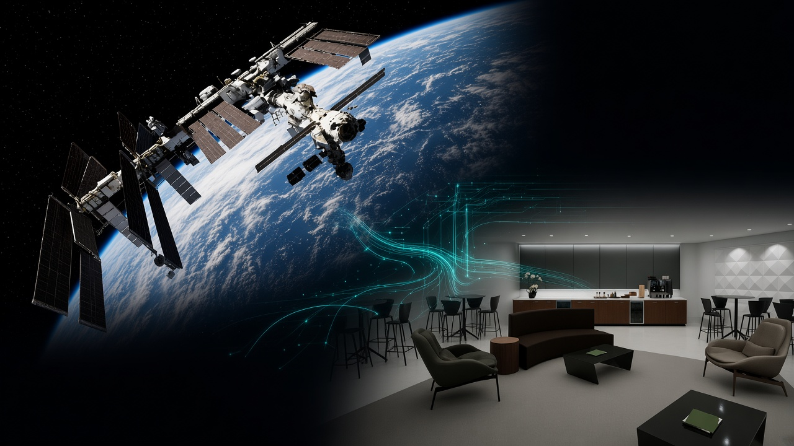
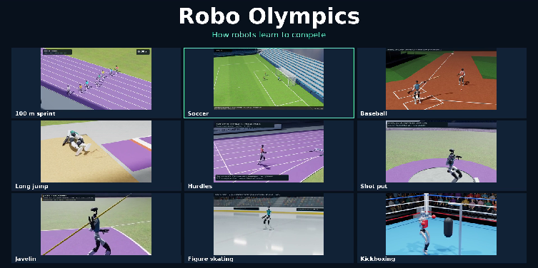
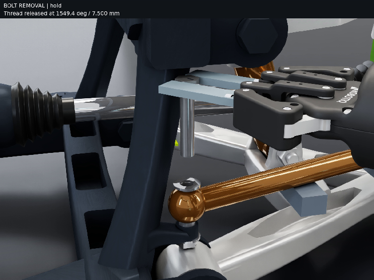
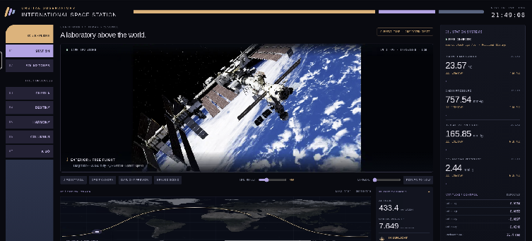

Article
Putting Astra to Work in Simulation With NVIDIA Omniverse Libraries #
A rolling look at what developers are building with OpenAI GPT-6 Astra and NVIDIA Omniverse libraries.

Turning a physical AI simulation goal into a working application takes more than code. Developers need usable assets, connected tools, and tests that reveal whether a system behaves as intended. AI agents expand what developers can build and test by preparing environments, integrating capabilities, and running experiments—freeing developers to explore scenarios, investigate failures, and test improvements.
With advances in coding, visual reasoning, and computer use, models such as OpenAI GPT-6 Astra can coordinate multistep workflows. These experiments show how that extends to building editable scenes, inspecting results, and revising implementations as requirements evolve. NVIDIA Omniverse libraries and agent skills, coupled with other NVIDIA technologies including NVIDIA Isaac libraries, provide tools to evaluate physical behavior within existing applications, so agents can use the results to guide their next revision.
This ongoing series brief highlights from internal NVIDIA experiments with Astra and Omniverse libraries, offering a glimpse of what teams are exploring and learning. And the early results are worth paying close attention to.
Robo Olympics: Teaching Robots to Go for Gold #

Teaching robots a sport requires translating visual references into actions that hold up in physics simulation. For Robo Olympics, NVIDIA’s Tae Kim used sports videos and natural-language instructions to guide Astra through building scenes, controllers, simulation trials, and videos featuring Unitree G1 humanoids.
Kimodo–a motion-generation AI model–generated motion references, SOMA Retargeter–a motion-retargeting library–adapted them to the robot’s joints, and SONIC provided pretrained whole-body control. Astra built sport-specific controllers above SONIC and refined them through repeated physics trials. Here, the Newton open-source physics engine was used to simulate balance, forces, and contact to help evaluate timing, aim, and recovery while NVIDIA Warp powered GPU-accelerated calculations, such as moving sand. The training environment was represented using OpenUSD and simulation rendered with ovrtx.
In one hurdle experiment, ovrtx also supplied images from a robot-mounted virtual camera, enabling a perception model to detect the hurdle and the controller to adjust its timing as Newton advanced the physical world. The robot succeeded in 64 of 100 single-hurdle simulation trials—an early demonstration of using visual feedback and physics to test and refine visually guided robot behavior.
Want to explore your own simulation idea? Join Tae Kim and NVIDIA and community developers for a live build with Astra and Omniverse libraries, including lessons from Robo Olympics on guiding agents and testing results. Tune in September 30 at 11 a.m. PDT.
Test robotic disassembly with CAD and simulation feedback #

Can a robot reach the fasteners and take an assembly apart? NVIDIA's Jens Jebens explored that question with Astra, using it to agentically model a car suspension in PTC Onshape and rig it in a physically plausible manner in NVIDIA Isaac Sim.
Astra used simulation feedback to revise the design in Onshape’s UI, measured the remaining space and devised a wrench that fit. Jens reported successful toe-control arm removal in simulation, paving the way for disassembly and assembly policy training in Isaac Lab.
Developers can explore how design and tooling choices affect robotic assembly. For engineering software makers, this points to an opportunity to extend existing applications with agents that use their trusted CAD tools, simulators, and engineering data to test changes and guide revisions. Software makers can bring that expertise into agent-driven workflows while retaining control of their applications and customer experience.
Want to try it? Explore NVIDIA's Onshape importer guide to start experimenting with your own assembly in Isaac Sim.
Bring the International Space Station into the browser #

Turning 3D assets into a live-data application requires scene assembly, data integration, and an interface.
NVIDIA’s Nic Johns used Astra to assemble publicly available NASA assets—555 exterior meshes and seven interior modules—into an OpenUSD model of the International Space Station. Blender supported conversion and assembly; NVIDIA Omniverse libraries—ovrtx, ovstage, and ovstream—provided rendering, scene runtime, and streaming for a custom web interface with ISS telemetry. The initial prompt produced the application; a second corrected Earth in the scene.
Developers can reuse existing assets in custom applications, delegating preparation and integration to an agent. Engineering software teams could offer users tailored views of their models and operational data.
Want to experiment with your own USD scene in a browser? Check out NVIDIA’s Omniverse Realtime Viewer skill.
Turn captured rooms into scenes you can test #
Turning stereo captures into an editable simulation scene requires more than reconstruction: developers must resolve incomplete geometry, preserve uncertainty, and configure physical behavior. In this prototype by Chirag Majithia, Astra helped turn stereo RGB captures into an editable studio scene through three stages:
- Object map: Astra coordinated PyCuSFM, FoundationStereo, and nvblox to reconstruct the room. Comparing geometry with source images helped recover a missed door and exit sign; areas with insufficient depth evidence remained unknown.
- Object library: Astra combined generated geometry and Blender-authored assets, using V2D alignment tools and user review to select and place objects.
- Scene composition and testing: Astra integrated USD Content Agents’ physics-authoring and inspection code, configured doors and drawers, and used Isaac Sim tests to refine collisions and contacts. Stable interactions still required iteration.
The video brings these stages together through articulated storage demonstrations, recorded mouse-driven physics interactions, and controllable lighting. The resulting editable USD prototype connects reconstruction to interaction testing, letting developers inspect gaps, revise the scene, and test selected interactions.
Want to experiment with your own captures? Explore NVIDIA tools including Isaac CUDA-accelerated 3D reconstruction tools, Isaac Sim/Lab, ovrtx, and USD Content Agents to experiment with reconstructing, rendering, and testing your own scenes in simulation.